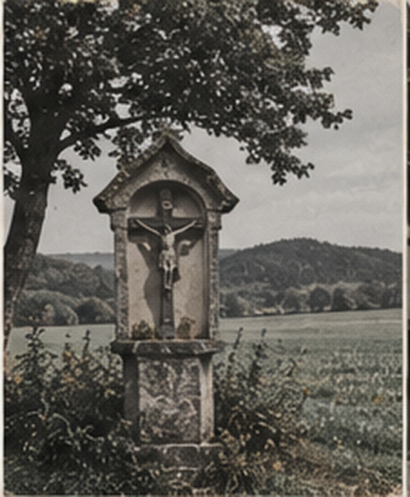
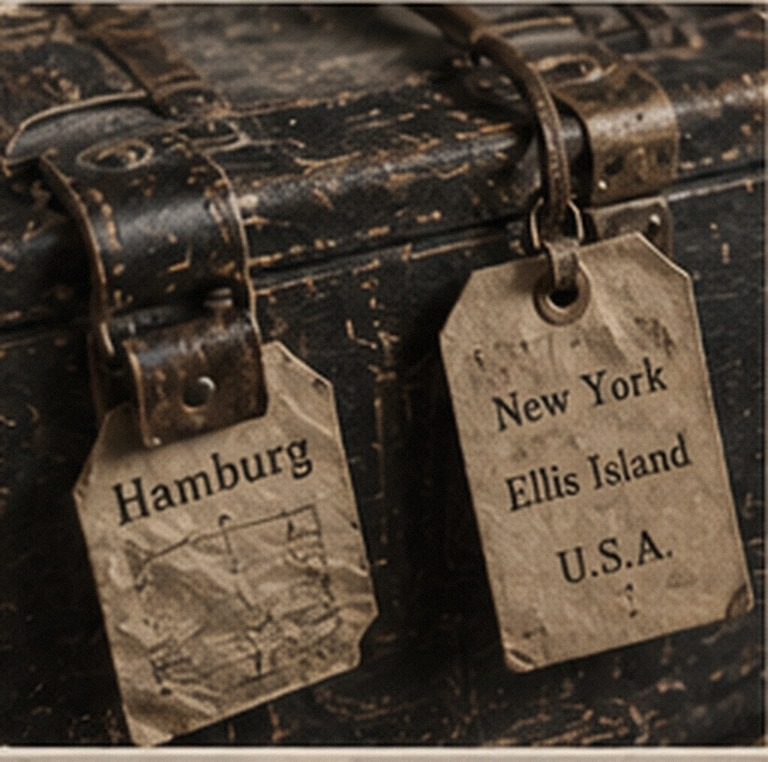
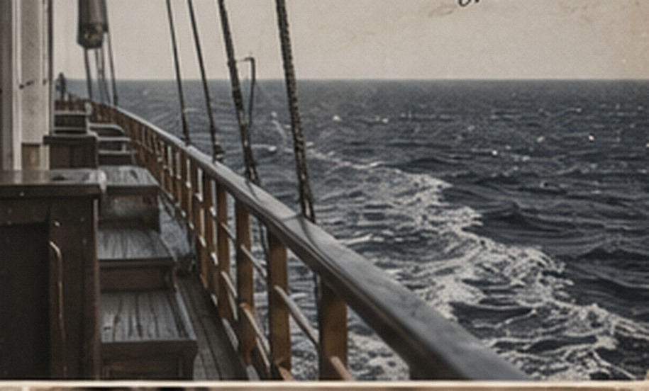

1794 Wadern-area Catholic baptism
Named target for Peter Lauermann II. Status: not yet located in this archive.
SOURCES
These are the documents we have identified and the ones we are still trying to find. As originals are added, this page will link to them.
Named target for Peter Lauermann II. Status: not yet located in this archive.
Current documented summary: enlisted January 1942; Great Lakes; USS Gantner (DE-60), USS Hugh Purvis (DD-709); discharged 26 January 1946 as Fireman First Class.
Employee no. 834746; employment began 29 January 1946. Payroll/retirement records and BLE Division 143 material are named archive sources.
Needed to prove or refine the Fred Lezer → Kurkau/Neidenburg connection before European linkage work proceeds.
Original parish evidence is needed for Richard Spoo’s locality and the proposed Grossmann/Freywald parentage.
Parish, civil, probate, and local records are needed to test the 1682 Warren extension.
ABOUT THE IMAGES
Some images help show the places, work, and travel of the family’s era. They are not family photographs or original documents.
When we add a family photo or record, it will be identified clearly and linked to its source.
IMAGE COLLECTION


